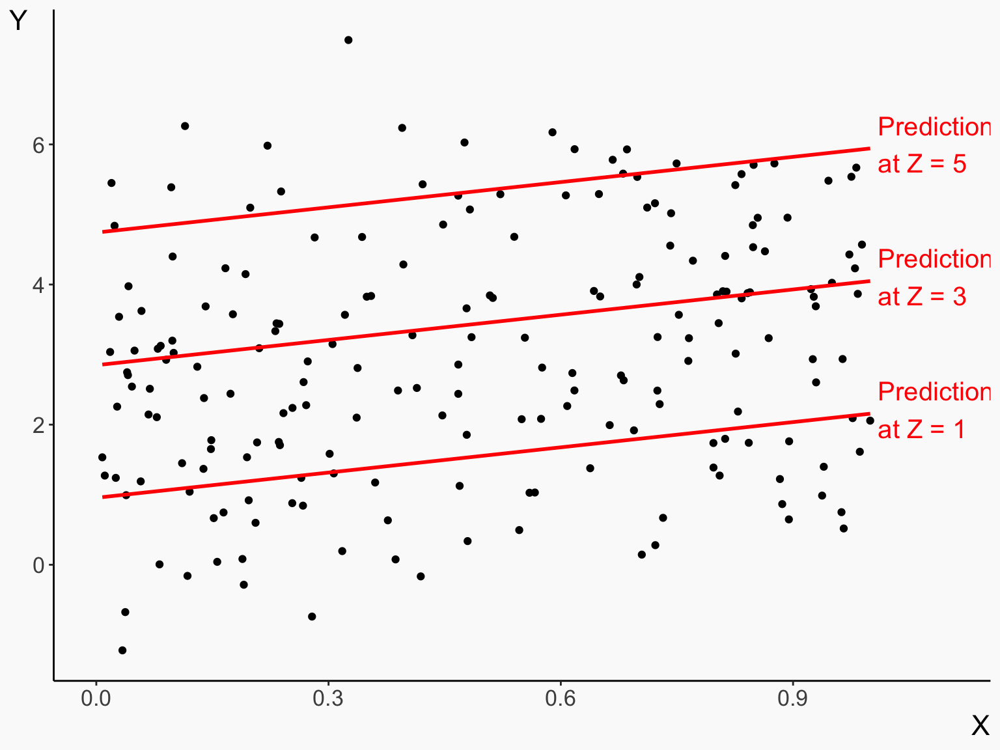
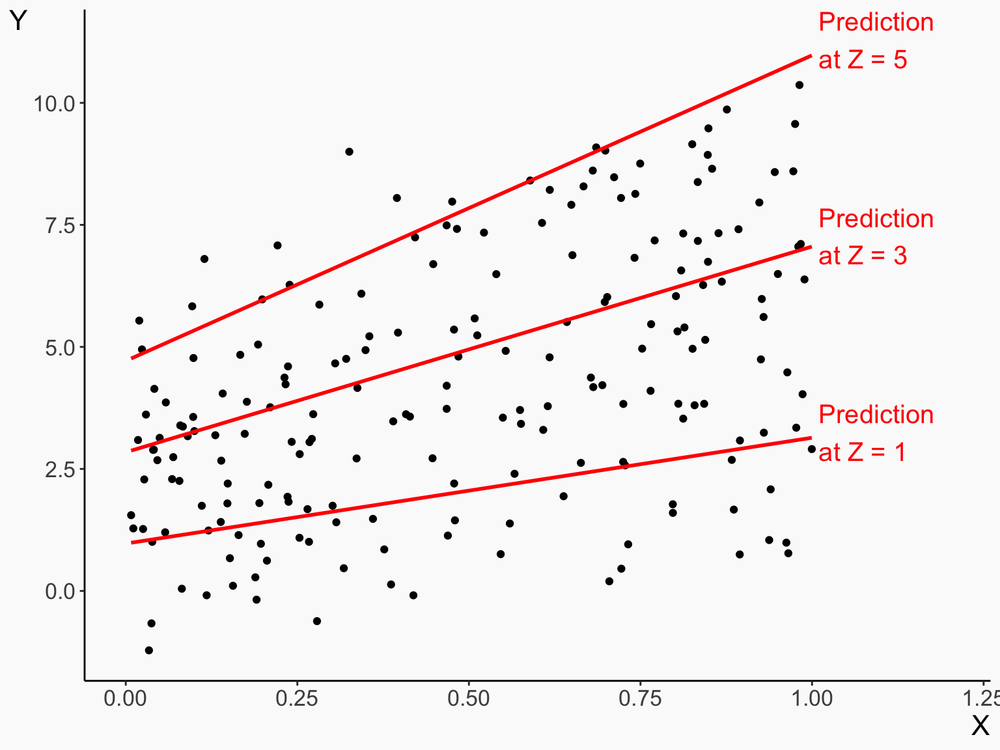

Binary Variables and Functional Form
i.e. what you actually do most of the time
Check-in
- Where are we at?
- Next week reading week!!! After that, we will start the causal methods. The format will be very similar to lectures up to now - extra papers
- This lecture will cover the last “intro†material
- This is a pretty packed lecture, but it’s structured to be easy to come back to and review, there will be plenty of practice next time, and this might end up broken across both days
Bias and the Error Term
- All of the nice stuff we’ve gotten so far makes some assumptions about our true model
\[ Y = \beta_0 + \beta_1X + \varepsilon \]
- In particular, we’ve made some assumptions about the error term \(\varepsilon\)
- So what is that error term exactly, and what are we assuming about it?
The Error Term
- The error term contains everything that isn’t in our model
- If \(Y\) were a pure function of \(X\), for example if \(Y\) was “height in feet†and \(X\) was “height in inches”, we wouldn’t have an error term, because a straight line fully describes the relationship perfectly with no variation
- But in most cases, the line is a simplification - we’re leaving other stuff out! That’s in the error term
The Error Term
- Consider this data generating process:
\[ ClassGrade = \beta_0 + \beta_1 StudyTime + \varepsilon \]
- Surely StudyTime isn’t the only thing that determines your ClassGrade
- Everything else is in the error term!
- ProfessorLeniency, InterestInSubject, Intelligence, and so on and so on…
The Error Term
- Isn’t that really bad? We’re leaving out a bunch of important stuff!
- If you want to predict \(Y\) as accurately as possible then we’re probably going to do a bad job of it
- But if our real interest is *figuring out the relationship between \(X\) and \(Y\), then it’s fine to leave stuff out, as long as whatever’s left in the error term obeys a few important assumptions
Error Term Assumptions
- The most important assumption about the error term is that it is unrelated to \(X\)
- If \(X\) and \(\varepsilon\) are correlated, \(\hat{\beta}_1\) will be biased - its distribution no longer has the true \(\beta_1\) as its mean
- In these cases we can say †\(X\) is endogenous†or “we have omitted variable bias”
- No amount of additional sample size will fix that problem!
- (what will fix the problem? We’ll get to that one later)
Omitted Variable Bias
- We can intuitively think about whether omitted variable bias is likely to make our estimates too high or too low
- The sign of the bias will be the sign of the relationship between the omitted variable and \(X\), times the sign of the relationship between the omitted variable bias and \(Y\)
- InterestInSubject is positively related to both StudyTime and ClassGrade, and \(+\times+ = +\), so our estimates are positively biased / too high
- More precisely we have that the mean of the \(\hat{\beta}_1\) sampling distribution is \[\beta_1 + corr(X,\varepsilon)\frac{\sigma_\varepsilon}{\sigma_X}\]
Thinking Through this Bias
- If \(Z\) hangs around \(X\), but \(Y\) doesn’t know about it, then the coefficient on \(X\) will get all the credit for \(Z\)
- This is a good way to keep that “direction of bias†problem in mind
- And you do want to keep it in mind! This is important for understanding general correlations you see in the wild, too
- And helps keep in line some things - for example, if \(Z\) is unrelated to \(X\), it won’t bias you!!
Thinking Through this Bias
- That means that when you’re thinking about the controls you need, that only includes things related to \(X\)
- Adding controls for things related to \(Y\) not \(X\) can make the model predict better and reduce standard errors, but won’t remove omitted variable bias
Less Serious Error Concerns
- Omitted variable bias can, well, bias us, which is very bad
- There are some other assumptions that can fail that may also pose a problem to us but less so
- We’ve assumed so far not just that \(\varepsilon\) is unrelated to \(X\), but also that the variance of \(\varepsilon\) is unrelated to \(X\), and that the \(\varepsilon\)s are unrelated to each other
- If these assumptions fail, our standard errors will be wrong, but we won’t be biased, and also there are ways to fix the standard errors
- We will cover these only briefly, they’ll come back later
Heteroskedasticity
- If the variance of the error term is different for different values of \(X\), then we have “heteroskedasticity”
- Notice in the below graph how the spread of the points around the line (the variance of the error term) is bigger on the right than the left

Heteroskedasticity
- We can correct for this using heteroskedasticity-robust standard errors which sort of “squash down†the big variances and then re-estimate the standard errors
- We can do this in
feolswithvcov = 'hetero'in R or with “robust†in STATA
The Right Hand Side
- Today we’ll be focusing on the right hand side of a regression
- Economists generally refer to a regression as having a “left-hand-side†of the dependent variable \(Y\), and a “right-hand-side†of all the independent stuff, like \(\beta_0 + \beta_1X + \beta_2Z + \varepsilon\).
- So far, we’ve just tossed stuff on the right-hand side and called it our treatment variable or a control variable without thinking too much harder about it
- Today we will think harder about it!
The Right Hand Side
We will look at three features of the right-hand side
- What if the variable is categorical or binary? (binary variables)
- What if the variable has a nonlinear effect on \(Y\) (polynomials and logarithms)
- What if the effect of one variable depends on the value of another variable? (interaction terms)
Binary Data
Binary Data
- A variable is binary if it only has two values - 0 or 1 (or “No†or “Yes”, etc.)
- Binary variables are super common in econometrics!
- Did you get the treatment? Yes / No
- Do you live in the US? Yes / No
- Is a floating exchange rate in effect? Yes / No
Comparison of Means
- When a binary variable is an independent variable, what we are often interested in doing is comparing means
- Is mean income higher inside the US or outside?
- Is mean height higher for kids who got a nutrition supplement or those who didn’t?
- Is mean GDP growth higher with or without a floating exchange rate?
Comparison of Means
- Let’s compare log earnings in 1993 between married people 30 or older vs. never-married people 30 or older
- Seems to be a slight favor to the married men
data(PSID, package = 'Ecdat')
PSID <- PSID %>%
filter(age >= 30, married %in% c('married','never married'), earnings > 0) %>%
mutate(married = married == 'married')
PSID %>%
group_by(married) %>%
summarize(log_earnings = mean(log(earnings)))# A tibble: 2 × 2
married log_earnings
<lgl> <dbl>
1 FALSE 9.26
2 TRUE 9.47Comparison of Means

Comparison of Means
- The difference between the means follows a t-distribution under the null that they’re identical
- So of course we can do a hypothesis test of whether they’re different. But why bother trotting out a specific test when we can just do a regression?
- (In fact, a lot of specific tests can be replaced with basic regression, see this explainer)
Comparison of Means
Notice:
- The intercept gives the mean for the non-married group
- The coefficient on marriedTRUE gives the married minus non-married difference
- i.e. the coefficient on a binary variable in a regression gives the difference in means
- If we’d defined it the other way, with “not married†as the independent variable, the intercept would be the mean for the married group (i.e. “not married = 0”), and the coefficient would be the exact same but times \(-1\) (same difference, just opposite direction!)
Comparison of Means
Why does OLS give us a comparison of means when you give it a binary variable?
- The only \(X\) values are 0 (FALSE) and 1 (TRUE)
- Because of this, OLS no longer really fits a line, it’s more of two separate means
- And when you’re estimating to minimize the sum of squared errors separately for each group, can’t do any better than to predict the mean!
- So you get the mean of each group as each group’s prediction
Binary with Controls
- Obviously this is handy for including binary controls, but why do this for binary treatments? Because we can add controls!
feols(log(earning..
Dependent Var.: log(earnings)
Constant 8.740*** (0.1478)
marriedTRUE 0.3404*** (0.0579)
kids -0.2259*** (0.0159)
age 0.0223*** (0.0038)
_______________ ___________________
S.E. type IID
Observations 2,803
R2 0.07609
Adj. R2 0.07510
---
Signif. codes: 0 '***' 0.001 '**' 0.01 '*' 0.05 '.' 0.1 ' ' 1Multicollinearity
- Why is just one side of it on the regression? Why aren’t “married†and “not married†BOTH included?
- Because regression couldn’t give an answer!
Multicollinearity
Mean of married is \(9.47\) and of non-married is \(9.26\). \[ \log(Earnings) = 0 + 9.47Married + 9.26NonMarried \] \[ \log(Earnings) = 3 + 6.47Married + 6.26NonMarried \]
These (and infinitely many other options) all give the exact same predictions! OLS can’t pick between them. There’s no single best way to minimize squared residuals
So we pick one with convenient properties, setting one of the categories to have a coefficient of 0 (dropping it) and making the coefficient on the other the difference relative to the one we left out
More than Two Categories
More than Two Categories
- That interpretation - dropping one and making the other relative to that, conveniently extends to multi-category variables
- Why stop at binary categorical variables? There are plenty of categorical variables with more than two values
- What is your education level? What is your religious denomination? What continent are you on?
- We can put these in a regression by turning each value into its own binary variable
- (and then dropping one so the coefficients on the others give you the difference with the omitted one)
Concept Checks
- If \(X\) is binary, in sentences interpret the coefficients from the estimated OLS equation \(Y = 4 + 3X + 2Z\)
- How might a comparison of means come in handy if you wanted to analyze the results of a randomized policy experiment?
- If you had a data set of people from every continent and added “continent†as a control, how many coefficients would this add to your model?
- If in that regression you really wanted to compare Europe to Asia specifically, what might you do so that the regression made this easy?
Interpreting OLS
Interpreting OLS
To think more about the right-hand-side, let’s go back to our original interpretation of an OLS coefficient \[ Y = \beta_0 + \beta_1X + \varepsilon \]
A one-unit change in \(X\) is associated with a \(\beta_1\)-unit change in \(Y\)
This logic still works with binary variables since “a one-unit change in \(X\)†means “changing \(X\) from No to Yes”
Notice that this assumes that a one-unit change in \(X\) always has the same effect on \(\beta_1\) no matter what else is going on
What if that’s not true?
Functional Form
- We talked before about times when a linear model like standard OLS might not be sufficient
- However, as long as those non-linearities are on the right hand side, we can fix the problem easily but just having \(X\) enter non-linearly! Run it through a transformation!
- The most common transformations by far are polynomials and logarithms
Functional Form
- Why do this? Because sometimes a straight line is clearly not going to do the trick!

Polynomials
Polynomials
- \(\beta_1X\) is a “first order polynomial†- there’s one term
- \(\beta_1X + \beta_2X^2\) is a “second order polynomial†or a “quadratic†- two terms (note both included, it’s not just \(X^2\))
- \(\beta_1X + \beta_2X^2 + \beta_3X^3\) is a third-order or cubic, etc.
Polynomials
What do they do?
- The more polynomial terms, the more flexible the line can be. With enough terms you can mimic any shape of relationship
- Of course, if you just add a whole buncha terms, it gets very noisy, and prediction out-of-sample gets very bad
- Keep it minimal - quadratics are almost always enough, unless you have reason to believe there’s a true more-complex relationship. You can try adding higher-order terms and see if they make a difference
Polynomials
- The true relationship is quadratic

Polynomials
- Higher-order terms don’t do anything for us here (because a quadratic is sufficient!)

Polynomials
- Interpret polynomials using the derivative
- \(\partial Y/\partial X\) will be different depending on the value of \(X\) (as it should! Notice in the graph that the slope changes for different values of \(X\))
\[ Y = \beta_1X + \beta_2X^2 \] \[ \partial Y/\partial X = \beta_1 + 2\beta_2X \]
So at \(X = 0\), the effect of a one-unit change in \(X\) is \(\beta_1\). At \(X = 1\), it’s \(\beta_1 + \beta_2\). At \(X = 5\) it’s \(\beta_1 + 5\beta_2\).
Polynomials
- IMPORTANT: when you have a polynomial, the coefficients on each individual term mean very little on their own. You have to consider them alongisde the other coefficients from the polynomial! Never interpret \(\beta_1\) here without thinking about \(\beta_2\) alongside. Also, the significance of the individual terms doesn’t really matter - consider doing an F-test of all of them at once.
Concept Check
- What’s the effect of a one-unit change in \(X\) at \(X = 0\), \(X = 1\), and \(X = 2\) for each of these?
feols(Y ~ X, dat.. feols(Y ~ X + I(.. feols(Y ~ X + I(...1
Dependent Var.: Y Y Y
Constant 7.285*** (0.5660) -0.1295 (0.3839) 0.0759 (0.5091)
X -8.934*** (0.1953) 0.9779* (0.3831) 0.4542 (0.9331)
X square -2.003*** (0.0752) -1.738*** (0.4368)
X cube -0.0354 (0.0574)
_______________ __________________ __________________ __________________
S.E. type IID IID IID
Observations 200 200 200
R2 0.91357 0.98122 0.98126
Adj. R2 0.91313 0.98103 0.98097
---
Signif. codes: 0 '***' 0.001 '**' 0.01 '*' 0.05 '.' 0.1 ' ' 1Logarithms
Logarithms
- Another common transformation, both for dependent and independent variables, is to take the logarithm
- This has the effect of pulling in extreme values from strongly right-skewed data and making linear relationships pop out
- Income, for example, is almost always used with a logarithm
- It also gives the coefficients a nice percentage-based interpretation
Logarithms

Or if you prefer…
- Notice the change in axes

Logarithms
- How can we interpret them?
- The key is to remember that \(\log(X) + a \approx \log((1+a)X)\), meaning that a \(a\)-unit change in \(log(X)\) is similar to a \(a\times100%\) change in \(X\)
- So, walk through our “one-unit change in the variable†logic from before, but whenever we hit a log, change that into a percentage!
Logarithms
- \(Y = \beta_0 + \beta_1\log(X)\) A one-unit change in \(\log(X)\), or a 100% change in \(X\), is associated with a \(\beta_1\)-unit change in \(Y\)
- \(\log(Y) = \beta_0 + \beta_1X\) a one-unit change in \(X\) is associated with a \(\beta_1\times 100\)% change in \(Y\)
- \(\log(Y) = \beta_0 + \beta_1\log(X)\) A one-unit change in \(\log(X)\), or a or a 100% change in \(X\), is associated with a \(\beta_1\)-unit change in \(\log(Y)\), or a \(\beta_1\times100\)% change in \(Y\).
- (Try also with changes smaller than one unit - that’s usually more reasonable)
Logarithms
Downsides:
- Logarithms require that all data be positive. No negatives or zeroes!
- Fairly rare that a variable with negative values wants a log anyway
- But zeroes are common! A common practice is to just do \(log(X+1)\) but this is pretty arbitrary
Functional Form
- In general, you want the shape of your function to match the shape of the relationship in the data (or, even better, the true relationship)
- Polynomials and logs can usually get you there!
- Which to use? Use logs for highly skewed data or variables with exponential relationships
- Use polynomials if it doesn’t look straight! Check that scatterplot and see how not-straight it is!
Concept Checks
- Which of the following variables would you likely want to log before using them? Income, height, wealth, company size, home square footage
- In each of the following estimated OLS lines, interpret the coefficient by filling in “A [blank] change in X is associated with a [blank] change in Y”:
\[ Y = 1 + 2\log(X) \] \[ \log(Y) = 3 + 2\log(X) \]
\[ \log(Y) = 4 + 3X \]
Interactions
- For both polynomials and logarithms, the effect of a one-unit change in \(X\) differs depending on its current value (for logarithms, a 1-unit change in \(X\) is different percentage changes in \(X\) depending on current value)
- But why stop there? Maybe the effect of \(X\) differs depending on the current value of other variables!
- Enter interaction terms!
\[ Y = \beta_0 + \beta_1X + \beta_2Z + \beta_3X\times Z + \varepsilon \] - Interaction terms are a little tough but also extremely important.
Interactions
Expect to come back to these slides, as you’re almost certainly going to use interaction terms in both our assessment and the dissertation
Interactions
- Change in the value of a control can shift a regression line up and down
- Using the model \(Y = \beta_0 + \beta_1X + \beta_2Z\), estimated as \(Y = .01 + 1.2X + .95Z\):

Interactions
- But an interaction can both shift the line up and down AND change its slope
- Using the model \(Y = \beta_0 + \beta_1X + \beta_2Z + \beta_3X\times Z\), estimated as \(Y = .035 + 1.14X + .94Z + 1.02X\times Z\):

Interactions
- How can we interpret an interaction?
- The idea is that the interaction shows how the effect of one variable changes as the value of the other changes
- The derivative helps!
\[ Y = \beta_0 + \beta_1X + \beta_2Z + \beta_3X\times Z \] \[ \partial Y/\partial X = \beta_1 + \beta_3 Z \]
- The effect of \(X\) is \(\beta_1\) when \(Z = 0\), or \(\beta_1 + \beta_3\) when \(Z = 1\), or \(\beta_1 + 3\beta_3\) if \(Z = 3\)!
Interactions
- Often we are doing interactions with binary variables to see how an effect differs across groups
- Now, instead of the intercept giving the baseline and the binary coefficient giving the difference, the coefficient on \(X\) is the baseline effect of \(X\) and the interaction is the difference in the effect of \(X\)
- The interaction coefficient becomes “the difference in the effect of \(X\) between the \(Z\) =”No†and \(Z\) = “Yes†groups”
- (What if it’s continuous? Mathematically the same but the thinking changes - the interaction term is the difference in the effect of \(X\) you get when increasing \(Z\) by one unit)
Interactions
- Marriage for those without a college degree raises earnings by 24%. A college degree reduces the marriage premium by 25%. Marriage for those with a college degree reduces earnings by .24 - .25 = -1%
feols(log(earnin..
Dependent Var.: log(earnings)
Constant 9.087*** (0.0583)
marriedTRUE 0.2381*** (0.0638)
collegeTRUE 0.8543*** (0.1255)
marriedTRUE x collegeTRUE -0.2541. (0.1363)
_________________________ __________________
S.E. type IID
Observations 2,803
R2 0.06253
Adj. R2 0.06153
---
Signif. codes: 0 '***' 0.001 '**' 0.01 '*' 0.05 '.' 0.1 ' ' 1Notes on Interactions
- Like with polynomials, the coefficients on their own now have little meaning and must be evaluated alongside each other. \(\beta_1\) by itself is just “the effect of \(X\) when \(Z = 0\)”, not “the effect of \(X\)”
- Yes, you do almost always want to include both variables in un-interacted form and interacted form. Otherwise the interpretation gets very thorny
Notes on Interactions
- Interaction effects are poorly powered. You need a lot of data to be able to tell whether an effect is different in two groups. If \(N\) observations is adequate power to see if the effect itself is different from zero, you need a sample of roughly \(16\times N\) to see if the difference in effects is nonzero. Sixteen times!!
- It’s tempting to try interacting your effect with everything to see if it’s bigger/smaller/nonzero in some groups, but because it’s poorly powered, this is a bad idea! You’ll get a lot of false positives